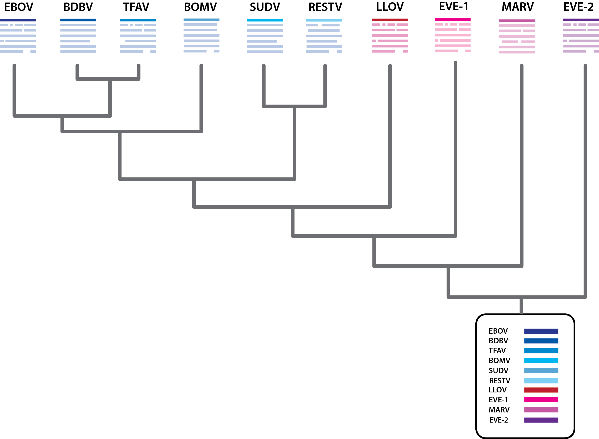

How to use Filoviridae-GLUE - an example-driven tutorial
To address these issues we created a data structure capture the evolutionary relationships between a representative set of CRESS DNA virus genome sequences in a data structure called a ‘constrained alignment tree’.
In GLUE, multiple sequence alignments can be represented in two forms; constrained and unconstrained. In unconstrained alignments, no fixed system of numbering is applied, and columns are inserted into the alignment as necessary to represent the homologies between sequences. By contrast, constrained alignments are anchored on a specific reference sequence, and use the coordinates of that reference to refer to homologies at specific nucleotide and amino acid positions.

Filovirus alignment tree.
Constrained alignments can be organized into a constrained alignment tree, in which each individual alignment is linked to at most one parent alignment, and any number of child alignments (Figure 1). Within the constrained alignment tree, each alignment represents all diversity above a particular node within the viral phylogeny. Thus, each alignment tree includes a ‘root’ alignment that represents homologies between all sequences included in the GLUE project, as well as child alignments that represent diversity within a particular subclade above the root (e.g. a genotype or subtype). An important constraint on each parent-child association within the alignment tree is that the reference sequence of the child alignment has to be a member sequence of the parent alignment. This provides a way of linking alignments so that the homologies represented in one can be linked to those in another.